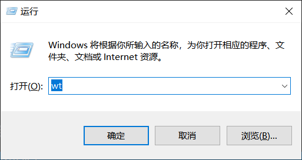

Bash是我使用的主要Shell客户端。 在Windows 10上，我很喜欢使用git-bash。 但是如何在新的Windows终端中将git-bash设置为默认终端？
- 安装像git-bash这样的Linux样式的shell。
- 安装Windows终端
- 将git-bash设置为Windows终端中的默认终端
- 使主题看起来像Ubuntu风格。
- 允许Ctrl + V粘贴
- 允许在目录右键单击上下文菜单中启动WT。
安装Git-Bash
在开始之前，你必须先安装git-bash。点击这里安装：https://git-scm.com
安装Windows Terminal
在未安装时，此处应该是获取选项，点击获取，这将会下载Windows Terminal
安装之后，默认情况下会打开一个新的Power Shell会话
将默认会话设置为Git-Bash
要将其更改为Bash，首先打开设置页面
将以下对象粘贴到list中：
1 | { |
这将在Windows终端中启用bash。 但是bash不是默认值。 要更改默认值，请在此处编辑：
保存设置文件，重新启动Windows Terminal，现在Bash将是默认值
要从任何路径运行Windows终端，只需运行：
1 | wt |
像这样：

更改终端主题以使其看起来像Ubuntu
为了使它看起来更像Ubuntu中的bash，请添加颜色主题：
1 | // Add custom color schemes to this array |
添加以下三行属性，添加的地方正是我们第一次修改默认Terminal的地方：
1 | { |
这让我们的体验极好，就像使用Ubuntu一样使用它。

允许使用ctrl+c/ctrl+v复制粘贴
在”keybindings”Array对象中，添加以下内容：
1 | "keybindings": |
允许从右键菜单启动WindowsTerminal
创建一个名为InstallWTMenu.bat的新文件。 将其内容编辑为：
1 | reg add "HKCU\Software\Classes\Directory\shell\Open WT here\command" /d "\"%LOCALAPPDATA%\Microsoft\WindowsApps\wt.exe\" -d \"%%1\"" /f |
保存它，并使用admin帐户运行它：
运行它后，重新点击右键，然后将会出现一个新的选项：
当您单机它时：
希望你喜欢。
如我的代码或博客中有任何错误或者有任何想咨询的问题都可以联系我:Email:erosionzhu@outlook.com